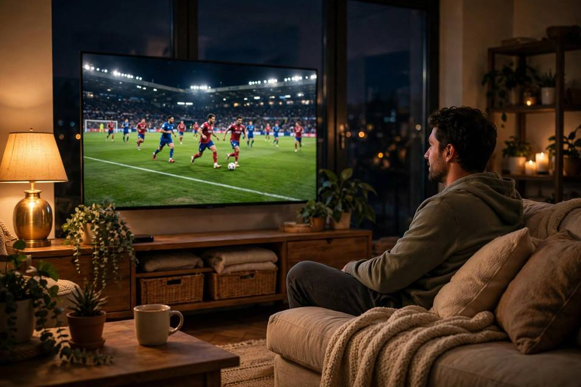

كيف تتابع مباريات اليوم على كورة 360؟
الخلاصة: افتح كورة 360، اختر تبويب اليوم، اضغط «تفاصيل المباراة» لمعرفة الموعد والقناة الناقلة الرسمية، ثم تابع المباراة عبر تلك القناة — كل ذلك مجاناً وبدون تسجيل، من الجوال أو الكمبيوتر.
الخطوة 1: اختر اليوم
في أعلى الصفحة الرئيسية ستجد تبويبات الأمس واليوم والغد. اختر «اليوم» لعرض مباريات اليوم، أو «الغد» للتخطيط لمشاهدة الغد مسبقاً.
الخطوة 2: صفِّ حسب البطولة
إذا كنت تتابع بطولة معينة، توجه إلى صفحة مباريات اليوم واستخدم أزرار الفلترة لعرض مباريات الدوري السعودي أو المصري أو أي دوري أوروبي فقط.
الخطوة 3: اعرض تفاصيل المباراة
اضغط زر تفاصيل المباراة في بطاقة أي مباراة، وستظهر لك نافذة فيها:
- الموعد الدقيق بتوقيت السعودية.
- القناة الناقلة الرسمية.
- الملعب المستضيف واسم البطولة.
الخطوة 4: تابع عبر القناة الرسمية
كورة 360 دليل للمواعيد والقنوات الرسمية ولا يستضيف أي بثوث. تابع المباراة دائماً عبر القناة الناقلة الرسمية المذكورة في التفاصيل — ستجد دليلاً شاملاً للقنوات في صفحة القنوات الناقلة.
نصائح لتجربة أفضل
- تصفح الموقع من الجوال: التصميم متجاوب بالكامل ويعمل بسلاسة على الشاشات الصغيرة.
- استخدم العدّاد التنازلي في الصفحة الرئيسية لمعرفة الوقت المتبقي على المباراة القادمة.
- لا حاجة للتسجيل أو تحميل تطبيق — كل شيء يعمل من المتصفح مباشرة.